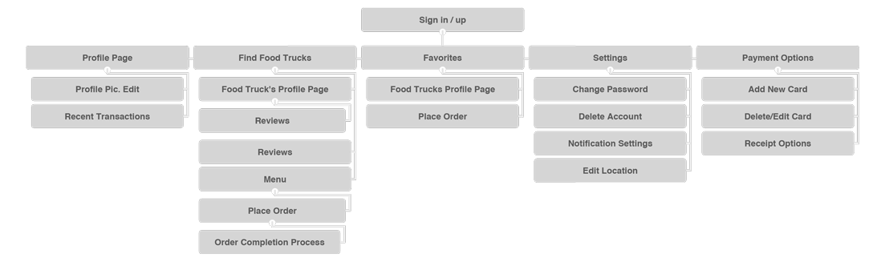
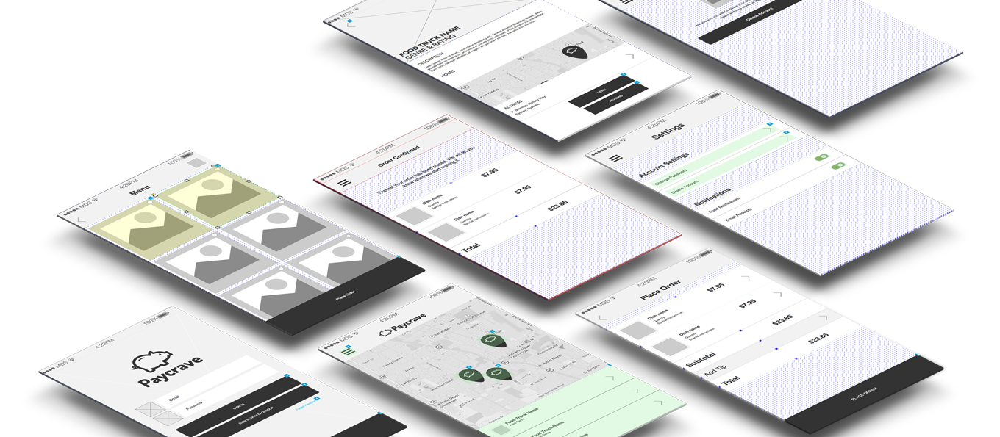

Paycrave
Mobile, UX, UI, Branding
The Problem
Several mobile payment solutions exist currently, like Square Cash or PayPal mobile. However when pertaining to food trucks, a well-designed solution hasn’t been created. This consumer app allows users to discover nearby food trucks, and select food to purchase. Users can also view their previous transactions, and provide feedback for each food truck they have purchased from.
User Flows, User Stories and Site Maps
Using the required user stories and goals I deemed neccessary after research, I delved into making seamless and intuitive site maps and flows, trying to account for any and all problems a user may encounter using the application. After making different user flows based on user goals, I made rapid low-fidelity wireframes on paper then translated them into wireframes in Axure.

Usability Testing
Using Axure to produce my low-fidelity wireframes also allowed me to use the program as a basic usability testing platform. I asked friends, family and my mentor to walk through the process so I could observe and receive feedback about different potential areas of weakness. From there I continuously revised the problem areas until both myself and my mentor felt comfortable with the final iteration.

Design
Using Sketch, Illustrator and the basic logo, color, and typography guidlines given to me, I set off to brand Paycrave and make the wireframes come to life. During this proccess I worked closely with my mentor to make sure that design didn't ever overpower usability and coninued to ask for feedback about the intuitivness and flow of the application.